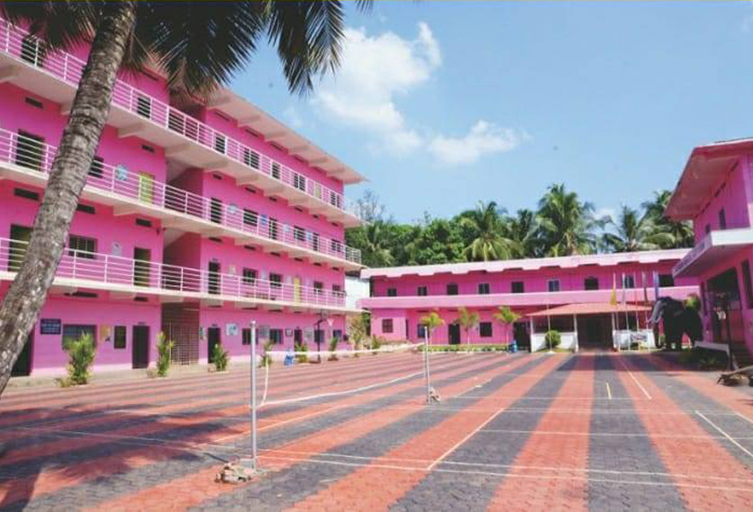

Chembilode Higher Secondary School is an aided school at Thalavil, Poduvachery P.O., Kannur, Kerala. The school was established in 1976 and its Higher Secondary section started in 2010.
| School Code | 13058 |
|---|---|
| HSS Code | 13157 |
| UDISE Code | 32020100225 |
| PIN | 670621 |